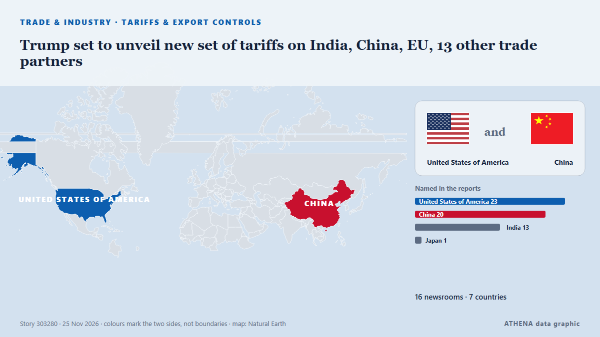

Trade, Industry & Infrastructure
SponsoredPresented by  Cybernetics and Artificial Intelligence Lab Welcome to the Cybernetics and Artificial Intelligence Laboratory, established at the Department of Business Administration of the National and Kapodistrian University of Athens. The lab is headed by Professor Dimitrios Thomakos. The lab aims to do research that can be published in top venues. Our research uses tools and methods of Artificial Intelligence, and lies in the following areas: - Forecasting - Decision making - Cyber security - Finance We are always looking forward to collaborating with exceptional students!
Cybernetics and Artificial Intelligence Lab Welcome to the Cybernetics and Artificial Intelligence Laboratory, established at the Department of Business Administration of the National and Kapodistrian University of Athens. The lab is headed by Professor Dimitrios Thomakos. The lab aims to do research that can be published in top venues. Our research uses tools and methods of Artificial Intelligence, and lies in the following areas: - Forecasting - Decision making - Cyber security - Finance We are always looking forward to collaborating with exceptional students!

Tariffs & export controlsTrump set to unveil new set of tariffs on India, China, EU, 13 other trade partners
Trade representative expected to unveil probe results as soon as this week, according to reports. from Anadolu Agency (English)
| 12 Nov | 94 |
|---|---|
| 13 Nov | 85 |
| 14 Nov | 78 |
| 15 Nov | 67 |
| 16 Nov | 122 |
| 17 Nov | 95 |
| 18 Nov | 102 |
| 19 Nov | 71 |
| 20 Nov | 99 |
| 21 Nov | 35 |
| 22 Nov | 57 |
| 23 Nov | 94 |
| 24 Nov | 43 |
| 25 Nov | 1 |
4th Abu Dhabi Maritime Awards honours winners
Under the patronage of His Highness Sheikh Hamdan bin Zayed Al Nahyan, Ruler’s Representative in the Al Dhafra Region; in. from Cyprus Shipping News
DR Congo halts cobalt exports again amid drop in prices
The Democratic Republic of Congo will again suspend cobalt exports starting at the end of the month in an attempt to boost prices. from Africanews (English)
Le Pen Condemns Turkey Over Libya Maritime Deal, Cites UNCLOS
French far-right politician backs Egypt's position in eastern Mediterranean dispute; Greece's considers agreement as baseless and illegal. from to vima
EU officially limits imports of Chinese hybrid vehicles
Brussels and Beijing agreed to limit exports of Chinese plug-in hybrids and other hybrid vehicles to the 27-nation bloc as part of a deal to avoid a trade war. from Free Malaysia Today
Belgium inaugurates Europe’s largest satellite factory
Belgium’s King Philippe on Tuesday, Nov. from Kyiv Post
CJP Co-Convenor Saurav Das stopped from flying to London amid document scrutiny
Cockroach Janata Party co-convenor Saurav Das was stopped from boarding a flight to London at Delhi’s Indira Gandhi International Airport after immigration authorities flagged his passport during an… from The Hindu
Saddam Hussein's Boeing 747 could be yours for $900,000
An Iraqi government plane used by former dictator Saddam Hussein has been put up for auction with an estimated value of $900,000. from The National
Disruptions to regional trains, buses, trams on 2nd day of public transport strike
Public transport users can again expect disruptions to regional trains, buses, and trams today. from NL Times
Black Sea port blockade would cost Ukraine 4.1% of GDP in 2027
Kyiv, Ukraine (Ports Europe) November 24, 2026 – Russia’s blockade of Ukrainian Black Sea ports in the greater Odesa region would cost Ukraine 4.1% of GDP in 2027, the Centre for Transport Strategies… from Ports Europe
At least 36 trains robbed; 14 accused in $22.5 million Nike cargo theft racket in US
Fourteen people have been indicted in the US for allegedly stealing over $22.5 million worth of cargo from at least 36 freight trains in Southern California. from Times of India (World)
Israel approves flydubai’s return to Tel Aviv pending security clearance
The decision was made after a visit to the UAE by the Israeli Transportation Ministry director-general. from The Straits Times
Russia to Spend $576m on Kaliningrad Supply Ferries
Russia will spend 47 billion roubles ($576 million) to build two giant rail ferries to ensure uninterrupted supplies to its Baltic exclave of Kaliningrad amid rising tensions in the region, Prime… from MarineLink
Indonesia Factory Fire Kills 26 as Rescuers Search for Missing Workers
At least 26 people have died and eight others remain missing after a fire tore through a confectionery factory in Indonesia’s Banten province, as authorities investigate the cause and possible… from Khaama Press
Malaysia to repatriate thousands more Myanmar migrants
KUALA LUMPUR: Malaysia's Prime Minister Anwar Ibrahim said on Tuesday the country will send more than 6,500 migrants back to Myanmar in a new round of repatriations. from Oman Observer
IRGC Reports Three Tankers Exploded in Hormuz After Hitting Mines
Iran's Revolutionary Guards navy reported that three tankers exploded and caught fire in the Strait of Hormuz after striking naval mines ... from IranWire
Tata Steel to acquire 26.6% stake in APL Apollo for ₹15,510 crore
Tata Steel will also launch an open offer for another 26% stake and sell its steel tubes and colour-coated businesses to APL Apollo as part of a broader strategic partnership. from Business Standard
Iran prepares oil tanker convoy to break US naval blockade, threatens Gulf facilities - report
Iran is reportedly preparing a convoy of more than 14 oil tankers to challenge the US naval blockade, as media outlets close to the IRGC threaten attacks on Gulf energy infrastructure. from The Jerusalem Post
24-hour strike by Greek seafarers on November 25
Athens, Greece (Ports Europe) November 23, 2026 – Greek seafarers’ unions will start a nationwide 24-hour strike on November 25, from 00:01 to midnight. from Ports Europe
UN food agency chief warns wars jeopardize food aid for 7.3 million more people
World Food Programme Executive Director Luke Lindberg warned on Monday that shipping chokepoints linked to… from BusinessWorld
Indonesia sweets factory fire leaves three workers dead and 37 missing
Indonesian rescuers deployed to a burning factory in Banten province on Sunday following reports that workers may be ... from Antara (English)
De Villiers alleges Australia tampered with ball in 2018 Durban Test
Former South Africa batsman says ball-tampering began before Cape Town scandal. from Express Tribune
Cool Carriers Welcomes Snow Land, First Reefer with Gate Rudder
Cool Carriers, the world’s largest operator of specialized reefer vessels, took delivery of Snow Land from Kitanihon Shipbuilding in Japan on November 12, 2026. from MarineLink
Land blockade of Iran almost impossible: FM Araghchi
TEHRAN, Nov. 23 (MNA) – Iranian Foreign Minister Abbas Araghchi said a land blockade of Iran would be virtually impossible given the country’s vast geography and variety of neighbors. from Mehr News (English)
Father and daughter travelling to family baptism detained by ICE at Seattle airport
Bystanders boarding the Alaska Airlines flight at Seattle-Tacoma International Airport captured footage of the arrest. from The Independent
U.S. trade chief sees progress in trade talks but faults Canada for Beijing-friendly moves
U.S. Trade Representative Jamieson Greer says Washington and Ottawa are making progress toward a trade agreement but that Canada's growing trade relationship with China remains a concern. from CBC News (alternative feed)
Sirte Municipality expresses solidarity with the General Command and condemns the attacks targeting Benghazi Port
Lego picks Portugal to build its 8th factory
The US$1.1 billion investment will create more than 1,000 jobs, with construction set to begin in 2027 and production expected to start in 2030. from Free Malaysia Today
Delta system outage delays 1,300+ US flights
Shafaq News- Washington An outage in Delta Air Lines’ weight-and-balance system delayed more than 1,300 flights across the United States on Sunday, the airline said. from Shafaq News (English)
US ports face surge in cyberattack attempts, threatening vital trade routes: Report
Port of Los Angeles recorded 120 million attempted cyberattacks in August, while major US crude oil export hub faces thousands of daily threats, Financial Times reports. from Anadolu Agency (English)
HT Evening News Brief November 22: Nepal PM's visit; COP31 deadlock, India-New Zealand test and more
Here's a quick recap of the day's top headlines from India, the world and the field of sports and entertainment. from Hindustan Times
Russia Hits Ukraine’s Energy Sector 100 Times in a Week
Russia carried out 100 attacks on Ukraine’s energy, oil and gas infrastructure over the past week, contributing to 224 recorded damage incidents, authorities said. from Kyiv Post
Vietnam Embassy celebrates Vietnamese Culture Day in Phnom Penh
The Embassy of Vietnam in Cambodia has hosted a cultural showcase in Phnom Penh to mark Vietnam Culture Day, spotlighting the country’s traditional culinary heritage and its world-renowned noodle… from Khmer Times
ICE arrests 2 at Seattle airport in 'chilling' scenes — governor
Washington's governor has denounced the arrests made by ICE officers at Seattle's airport, calling the incident "horrific." from DW English
US special envoy says Syria now open to ‘real deals,’ welcomes Chevron energy talks
'Proud to see Chevron and Syrian Petroleum Company working together to unlock Syria’s energy potential, rebuild critical infrastructure,' says Barrack. from Anadolu Agency (English)